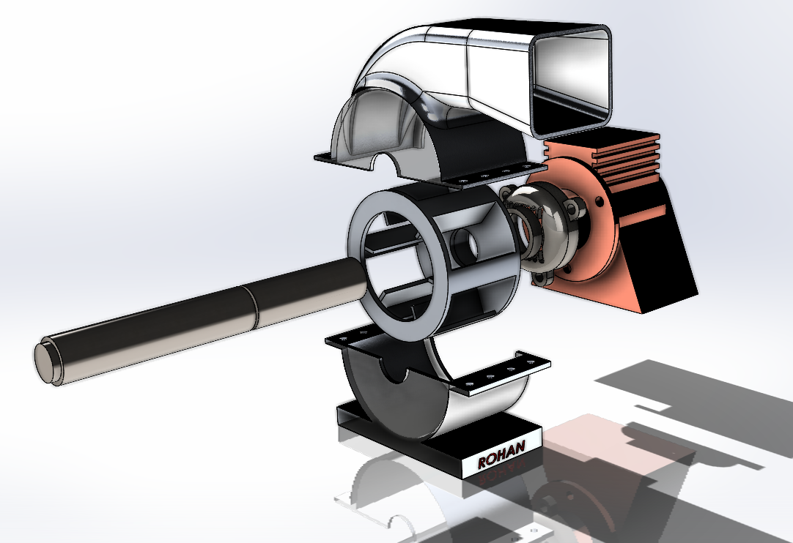
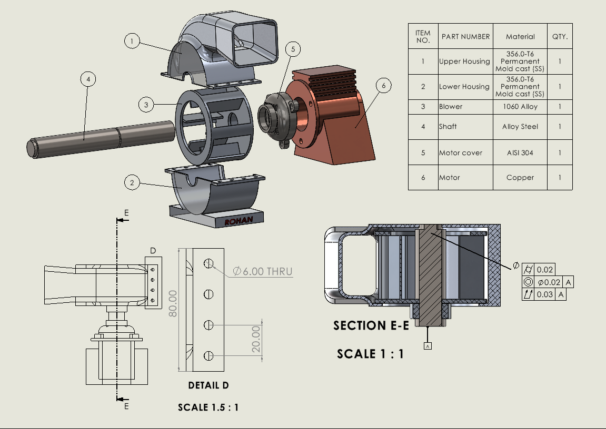
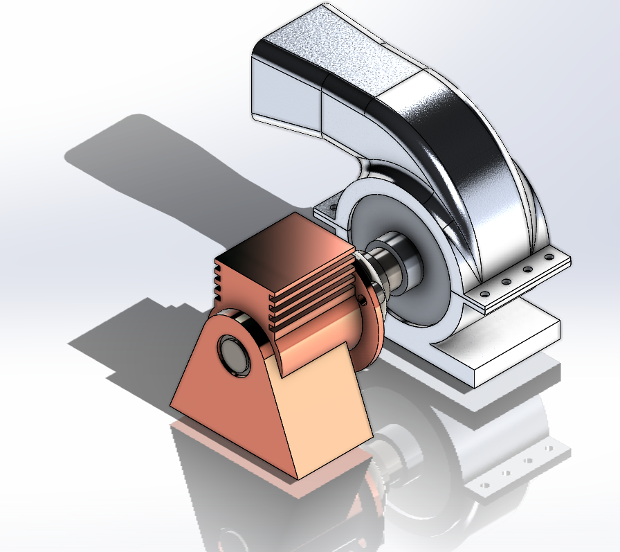

A compact motor–blower assembly modelled in SolidWorks to explore
multi-body assemblies, clearances around rotating parts and basic
design-for-manufacture details such as fastener patterns and split
housings.
Blower–motor assemblies like this are used across HVAC systems, small
compressors, cooling units, laboratory equipment and industrial machines
where controlled airflow is required. The 3D model replicates the core
structural logic found in real products: a housing that guides airflow,
a rotating blower supported by bearings, and a motor that drives the
shaft under load.
Purpose in practice: Real blower units convert
electrical energy into mechanical rotation to move air through ducts,
filters or cooling channels. The housing geometry determines airflow
efficiency and noise characteristics.
Why this model matters: Even at a simplified level,
this assembly demonstrates the essential engineering principles:
alignment of rotating parts, clearance management, fastener access,
material separation for manufacturable housings, and correct mounting
strategy for the motor.
Comparison to industry examples: Commercial blowers
from brands such as Fasco or Dayton use almost identical architecture:
split cast housings, a central blower ring, a supported shaft and a
compact electric motor. The SolidWorks model follows the same
mechanical flow, making it comparable to real industrial blower units
found in HVAC and cooling systems.
Engineering takeaway: The design showcases how
multi-body mechanical systems rely on precise geometric relationships
between housings, rotating parts and motor interfaces — the same
considerations used by mechanical designers in industry.

The exploded configuration reveals how the upper and lower housings,
blower ring, shaft, bearings and motor body stack together on a common
axis while maintaining assembly and service access.
Assembly Layout & Manufacturing Views

Figure 1 – Orthographic drawing & BOM.
The drawing sheet combines an exploded view with item balloons,
a bill of materials and a full section E–E through the blower and
shaft. Detail D defines the mounting plate hole pattern with
dimensions suitable for fabrication and inspection.

Figure 2 – Assembled configuration.
The completed assembly view highlights the compact routing of the
airflow path, motor mounting strategy and bolted joints on the
split housing. Materials and appearances are chosen to clearly
distinguish the motor, housing and rotating components.
Figure 3 – Exploded assembly structure.
The exploded layout makes the functional grouping clear: upper and
lower housing, central blower ring, supported shaft, bearing /
coupling interface and motor body. This view was used to verify
assembly order, clearances and fastener access.
Motion Study – Shaft Rotation & Blower Alignment
A simple motion study drives the shaft through rotation to check that
the blower ring, housing and motor interface remain clear of
interference. This animation was used primarily as a visual check on
assembly mates, alignment and the dynamic envelope of the rotating
parts.